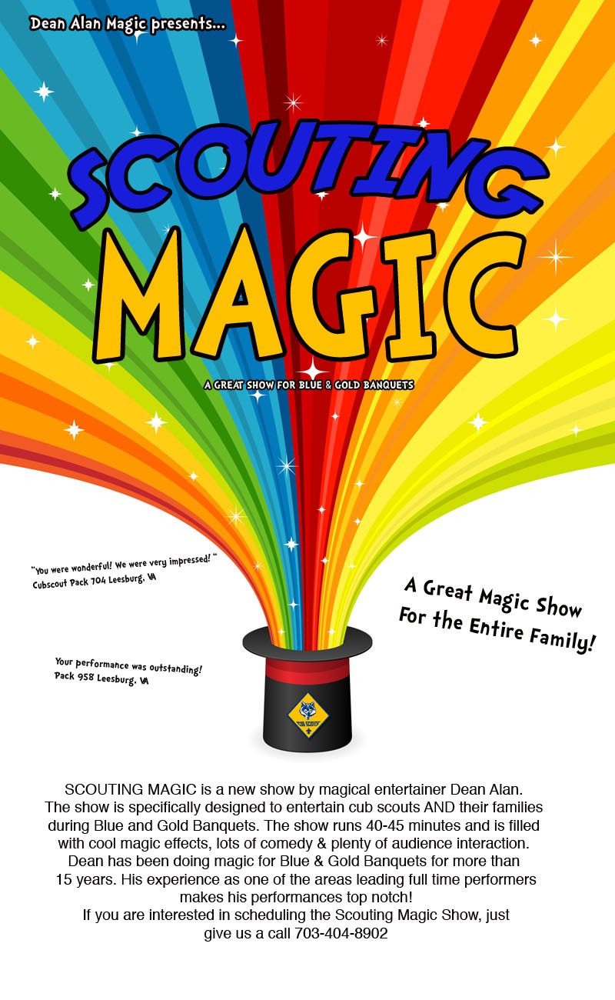
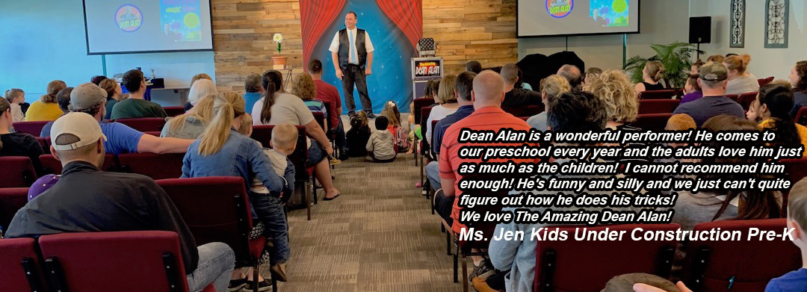
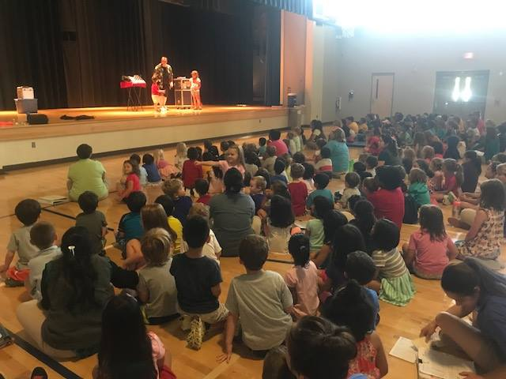
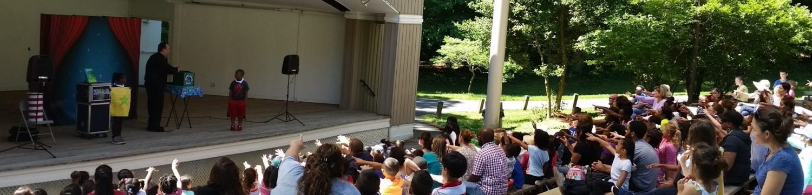
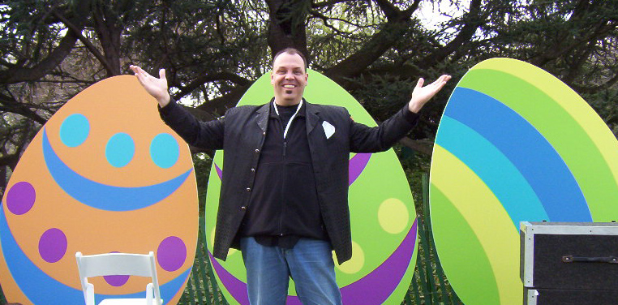

Blue and Gold magician
This Blue and Gold Magician Delivers Experience, Reliability and a GREAT Show To Scouts Across The Region.
Welcome to the Blue and Gold Magic of DEAN ALAN.
Dean Alan is one top full time professional Blue and Gold Magicians in the country. 
Every February he gears up for a slew of Scout Banquets. This is one Blue and Gold magician who loves to entertain!
Dean Alan specializes in Blue and Gold shows for family audiences. This is not tired old seen it a million times magic, but rather, a show specially designed for the Blue and Gold Banquet market. As the show progresses, Dean Alan will bring up audience volunteers to participate in the routines! He will usually get one or two scouts, a Den Leader and possibly one of the siblings or parents as well. Even though this show is for the benefit of the scouts, it’s really a show for all members of the audience, the entire scouting family!




Dean Alan has been performing at Blue and Gold Banquets for nearly 30 years. It’s safe to say that at this point in time he is an expert on how to present a fun, entertaining and enjoyable show for scouts! Besides scouting events, Dean has been seen performing at theatres, performing arts centers, schools, community centers, fairs and festivals and even the White House on several occasions!
Here are a Few Client Comments
“You were wonderful! We were very impressed! “
Cubscout Pack 704 Leesburg, VA
Your performance was outstanding!
Pack 958 Leesburg, VA
“The feedback from your show was great…Thank you for a wonderful show!”
J. Sharples, British Embassy, Washington D.C.
“The fine entertainment you so ably provided, made our event exciting and successful”
Debra Romash, White House Visitors Office
NOW IN NASHVILLE!!! Dean has recently relocated to the Nashville area and is available for your event!
If you are looking for quality, experience, an entertaining show, then you look no further than the Blue and Gold Magician, Dean Alan!
If you’re interested in finding out more about Dean Alan, simply click here!